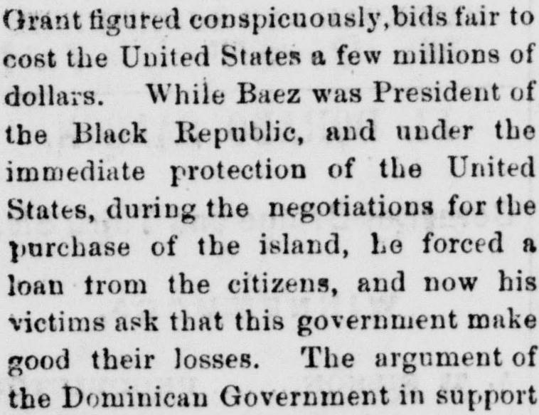
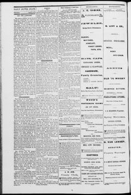

See the full pageVer la página completaImmediate protection of the United States, during the negotiations for theProtección inmediata de los Estados Unidos, durante las negociaciones para la
The Dominican Government submitted a claim arguing that the United States Government is responsible for losses and injuries caused by its protection of Baez during his presidency. According to the claim, Baez forced a loan from citizens, plundered the treasury, and ill-treated people while maintained in power by U.S. troops and ships, making the U.S. actions a violation of international law.El Gobierno dominicano presentó una reclamación alegando que el Gobierno de los Estados Unidos es responsable de las pérdidas y daños causados por la protección brindada a Báez durante su presidencia. Según la reclamación, Báez impuso un préstamo forzoso a los ciudadanos, saqueó el erario público y maltrató al pueblo mientras se mantenía en el poder respaldado por tropas y barcos estadounidenses, lo que convertía las actuaciones de los Estados Unidos en una violación del derecho internacional.
FULL TEXT:TRADUCCIÓN:
THAT little job for the purchase of San Domingo, in which President Grant figured conspicuously, bids fair to cost the United States a few millions of dollars. While Baez was President of the Black Republic, and under the immediate protection of the United States, during the negotiations for the purchase of the island, he forced a loan from the citizens, and now the victims ask that this government make good their losses. The argument of the Dominican Government in support of the claim recites all about Baez’s accession to power, his attempt to dispose of the country, and the lease of Samana. It declares that he was maintained in power by United States troops, and was compelled to flee when they ceased to support him; that while occupying his Presidency, protected by United States ships, he plundered the treasury of a large portion of its revenue, and ill-treated citizens. It alludes to many other facts with regard to the relations between the United States and San Domingo, which have occupied public attention during several years, and declares that the actEse pequeño trabajo para la compra de Santo Domingo, en el cual el presidente Grant figuró conspicuamente, promete costar a los Estados Unidos unos pocos millones de dólares. Mientras Báez era Presidente de la República Negra, y bajo la protección inmediata de los Estados Unidos, durante las negociaciones para la compra de la isla, forzó un empréstito de los ciudadanos, y ahora las víctimas piden que este gobierno compense sus pérdidas. El argumento del Gobierno dominicano en apoyo de la reclamación expone todo acerca del acceso de Báez al poder, su intento de disponer del país, y el arrendamiento de Samaná. Declara que fue mantenido en el poder por tropas de los Estados Unidos, y fue obligado a huir cuando cesaron de apoyarlo; que mientras ocupaba su Presidencia, protegido por buques de los Estados Unidos, saqueó la hacienda de una gran porción de sus ingresos, y maltrató a los ciudadanos. Alude a muchos otros hechos en cuanto a las relaciones entre los Estados Unidos y Santo Domingo, que han ocupado la atención pública durante varios años, y declara que el acto
The Silver State. Unionville, Nev., April 8, 1875.
See the original at the Library of CongressVer el original en la Biblioteca del Congreso
Published by: H.A. Waldo, 1870-1903.Publicado por: H.A. Waldo, 1870-1903.
Edition: Edition 1Edición: edición 1
Page: 2Página: 2
Frequency: daily (1870–1903)Frecuencia: diario (1870–1903)
Collection: Chronicling America, Library of CongressColección: Chronicling America, de la Biblioteca del Congreso
LCCN: sn84022060LCCN: sn84022060
ISSN: 2766-4880ISSN: 2766-4880
OCLC: 10270444OCLC: 10270444
Call Number: Newspaper 6888-XSignatura (Call Number): Newspaper 6888-X
Rights: public domain, according to the Library of CongressDerechos: dominio público, según la Biblioteca del Congreso